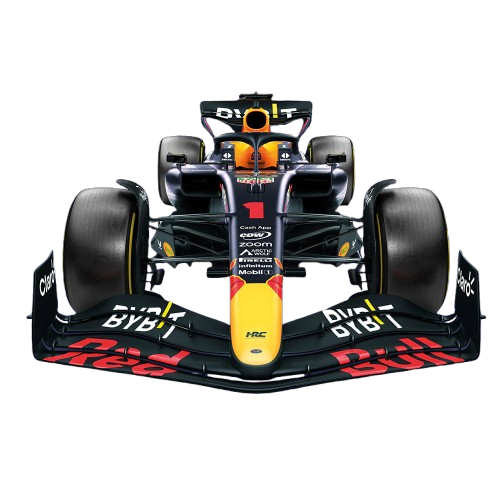

<div class="dashboard-body">
  <div class="piloto-container {{getBackgroundColor()}}">
    
    <div class="nome-piloto-container">
      <span id="nome-piloto">{{getnomeDisplayPiloto()}}</span>
      <span id="sobrenome-piloto">{{getSobrenomeDisplayPiloto()}}</span>
    </div>
    <div class="img-equipe-container">
      
    </div>
    <div class="detalhe-triangulo {{getSecondaryBackgroundColor()}}"></div>
  </div>
  <!--  -->
  

  <h1>Estatísticas</h1>

  <div class="seleciona-temporada">
    <mat-form-field>
      <mat-label>Temporada</mat-label>
      <mat-select [(value)]="temporadaSelecionada" (selectionChange)="mudarTemporada($event)">
        <mat-option *ngFor="let ano of anos" [value]="ano">{{ano}}</mat-option>
      </mat-select>
    </mat-form-field>
  </div>
  <div class="graficos-container">
    <div class="cards-container">
      <mat-card class="line-chart">
        <mat-card-content>
          <app-grafico-de-linha
          [lineChartDataConfig]="resultadosEmTemporadaChartConfig"
          [lineChartOptionsPlugins]="getPluginsResultadosEmTemporadaLineChart()"
          [maxYValue]="20"
          [chartColor]="getChartColor()"
          >
          </app-grafico-de-linha>
        </mat-card-content>
      </mat-card>

      <mat-card class="line-chart">
        <mat-card-content>
          <app-grafico-de-linha
          [lineChartDataConfig]="podiosPorTemporadaChartConfig"
          [lineChartOptionsPlugins]="getPluginsResultadosPorTemporadaLineChart('Pódios em')"
          [maxYValue]="24"
          [chartColor]="getChartColor()"
          >
          </app-grafico-de-linha>
        </mat-card-content>
      </mat-card>

      <mat-card class="line-chart">
        <mat-card-content>
          <app-grafico-de-linha
          [lineChartDataConfig]="pontosPorTemporadaChartConfig"
          [lineChartOptionsPlugins]="getPluginsResultadosPorTemporadaLineChart('Pontos em')"
          [chartColor]="getChartColor()"
          >
          </app-grafico-de-linha>
        </mat-card-content>
      </mat-card>

      <mat-card class="pie-chart">
        <span>{{getTextoResultadosEmTemporadaSelecionada('Resultados em')}}</span>
        <mat-card-content>
          <app-grafico-pie
          [pieChartDataConfig]="resultadosEmTemporadaPieChartConfig"
          [tooltipCallbacks]="getResultadosEmTemporadaTooltipCallbacks()"
          >
          </app-grafico-pie>
        </mat-card-content>
      </mat-card>

      <mat-card class="pie-chart">
        <span>{{getTextoResultadosEmTemporadaSelecionada('Zonas de classificação em')}}</span>
        <mat-card-content>
          <app-grafico-pie
          [pieChartDataConfig]="zonasDeClassificacaoPieChartConfig"
          [labelsPieChart]="['Q1', 'Q2', 'Q3']"
          [tooltipCallbacks]="getZonasDeClassificacaoTooltipCallbacks()"
          >
          </app-grafico-pie>
        </mat-card-content>
      </mat-card>
    </div>
  </div>
</div>
